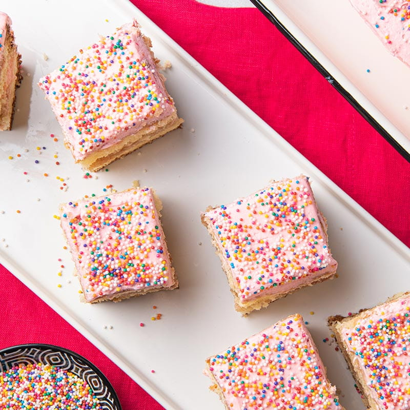

Home
Cortadillo (Mexican Pink Cake)

Cortadillo also known as Mexican Pink Cake, is one of my favorite childhood deserts. I
remember when I was little my mom would take me to the panaderia to buy pan dulce, and this pink cake
was always my top pick. It may be the hot pink frosting that caught my attention, but I promise the fluffy
yellow cake melts in your mouth. Below is a recipe I got from Chicano Eats ,
it's one that recreates the cake I had growing up. Enjoy!
Ingredients
For the Cake
- 2 1/2 cups all purpose flour
- 2 1/2 tps baking powder
- 1/2 tps salt
- 3/4 cup unsalted butter (room temperature)
- 1 3/4 cups white granulated sugar
- 3 large eggs
- 1 1/2 tps vanilla extract
For the Frosting
- 1 cup unsalted butter (room temperature)
- 1 tps vanilla extract
- 1/2 tps kosher salt
- 4 cups powdered sugar
- 1/2 cup heavy cream
- neon pink food coloring
- sprinkles
Instructions
For Cake
-
Preheat your oven to 350 F and grease and line a 9x13"
baking pan with a parchment sling so the two longer sides have a piece
hanging over the pan to help with lifting later.
-
In a medium sized bowl whisk together the flour, baking powder, and salt
and set aside.
-
Beat the butter with the sugar in the bowl of a stand mixer fitter with the
paddle attachment on medium speed until light and fluffy. This should take about
2 minutes.
-
Add the vanilla and eggs, one at a time, making sure that ones mixed in
before adding the next. After the eggs have been mixed in, add one third
the dry ingredients, mix on low to incorporate, then 1/3 of the buttermilk,
followed by another third of the dry mixture,another third of the buttermilk,
and finally the last amount of each. Mix just until combined then use a silicone
spatula to scrape down the sides of the bowl. Add batter to the prepared pan, smooth
it out. Bake for 24-30 minutes, until the cake is lightly golden brown and a
toothpick inserted into the center of the cake comes out clean.
-
Let the cake cool completely then make the buttercream.
For the Buttercream
-
In the bowl of a stand up mixer fitted with the paddle attachment, cream the
butter with the vanilla and salt for a full minute at medium speed. Turn the
speed down to low and add the powdered sugar 1/2 cup at a time.
-
After you have all the powdered sugar mixed in, add the heavy cream and turn the
mixer on low to incorporate it then to medium high for a full minute to make the
buttercream nice and fluffy.
-
After the buttercream is ready you can add the food coloring. I ended up adding 40
drops of neon pink food coloring to get the saturation correct, but start with 20 and
go from there. Mix the buttercream just until the color is all incorporated then spread
it evenly over the cake and top with sprinkles.
-
Place the cake in the fridge for 30-45 minutes and wait until the frosting firms up for
a clean cut and even better tasting cake!